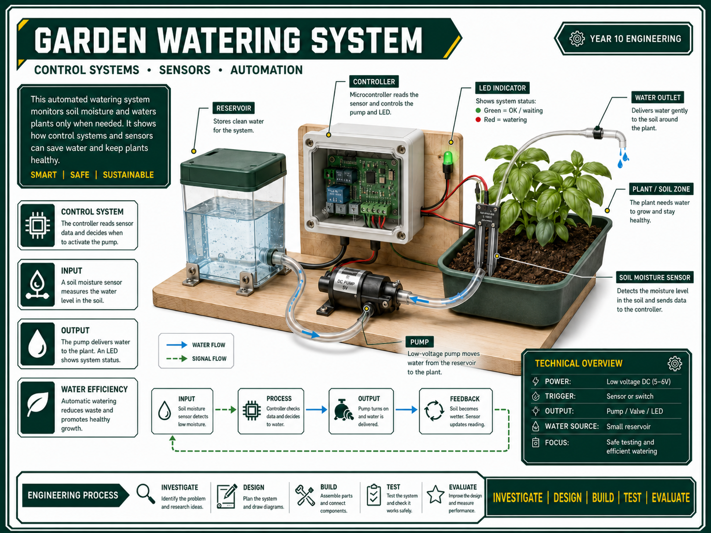

Plan the System

Keep the engineering problem simple: what condition starts watering, what controls the decision, and what output delivers the water?
Input, process and output
- Input: soil moisture sensor, rain sensor, push button, timer, switch or teacher-approved trigger.
- Process: controller, relay, code, logic gate or manual control decision.
- Output: pump, valve, LED warning, buzzer or watering mechanism.
- Feedback: evidence that the system watered correctly, stopped correctly and can be tested again.